🔒 3 秒安全檢查
有沒有病資？會不會給病人看？我能不能負責？— Flow 會處理圖片、影片、人臉與聲音，上傳素材前先過這三關，任何一題讓你猶豫，先回 Part 3 — AI 安全與隱私。另外要知道：Flow 沒有「退出模型訓練」的開關 — 官方隱私頁載明，個人帳號上傳與生成的內容會被 Google 用於改進產品與 AI 模型，並有人工抽樣審查。病資與病人臉部照片，從一開始就不要上傳。
Google Flow 是什麼
Google Flow 是 Google 的實驗性 AI 創作平台，整合了圖像生成、影片生成、編輯工具於一體。
基於 Nano Banana 模型，支援精確編輯、風格一致性、繁體中文字渲染。
提供 Omni Flash（Gemini Omni 家族首款影片模型）和 Veo 3.1（Lite／Fast／Quality 三檔）兩系模型，支援文字轉影片、圖片轉影片、影片轉影片編輯。
內建 Gemini 助手，用自然語言指導創作和編輯，不需要學複雜操作。
34 款創意小工具 — 分鏡、海報、特效、轉檔一應俱全，詳見下方總覽。
免費額度與方案
📅 方案資訊更新於 2026 年 7 月 — 額度與價格可能調整，以 Google 官方公告為準。
| 方案 | Credits | 月費 | 適合 |
|---|---|---|---|
| 免費 | 50 credits／每日 | $0 | 個人學習、偶爾使用 |
| AI Plus | 200 credits／每月 | $4.99 | 固定產出需求 |
| AI Pro | 1,000 credits／每月 | $19.99 | 頻繁使用 |
| AI Ultra | 10,000 credits／每月 | $99.99 | 專業創作者 |
| AI Ultra+ | 25,000 credits／每月 | $199.99 | 重度創作者 |
各模型每次生成的 credit 費用
| 模型／功能 | 每次生成 | 備註 |
|---|---|---|
| Veo 3.1 - Lite | 10 credits | 4／6／8 秒（Ultra 半價） |
| Veo 3.1 - Fast | 20 credits | 4／6／8 秒（Ultra 半價） |
| Veo 3.1 - Quality | 100 credits | 8 秒 |
| Omni Flash | 15–30 credits | 依秒數：4s 15／6s 20／8s 25／10s 30；編輯已生成或上傳的影片一次 40 |
| 1080p 放大 | 訂閱者 0 | 免費帳號不可用 |
| 4K 放大 | 50 credits | 僅 Ultra |
圖像生成（Nano Banana）
Flow 的圖像生成使用 Nano Banana 模型，跟獨立使用時相同，但整合在 Flow 的介面中更方便疊代。2026 年 6 月底 Google 發表新一代 Nano Banana 2 系列（Lite 版主打約 4 秒極速出圖），將陸續導入 Flow — 你實際用到哪一版，以站內模型選單顯示為準。
Flow 生圖的獨特優勢
- 風格鎖定 — 生成一張滿意的圖後，後續生成會自動保持風格一致
- 局部編輯 — 框選圖片某區域，只修改那個部分
- 直接轉影片 — 生成的圖片可以一鍵轉為影片首幀
- 繁中字渲染 — Nano Banana 對繁體中文字的支援很好。想讓指定文字出現在圖上，把字用引號包住並指定位置（例：在畫面正中央寫上「勤洗手」），渲染成功率最高
圖片編輯工具
- Lasso 框選 — 圈出圖片的某個區域，用文字指令只改那一塊
- Drawing 手繪標記 — 直接在圖上畫出你想修改的位置
- 自然語言編輯 — 用一句話描述修改：「把背景那個人移除」「天空改成黃昏」
- 下載解析度 — 免費帳號可選 1K／2K，4K 不開放（實測 2026-07）
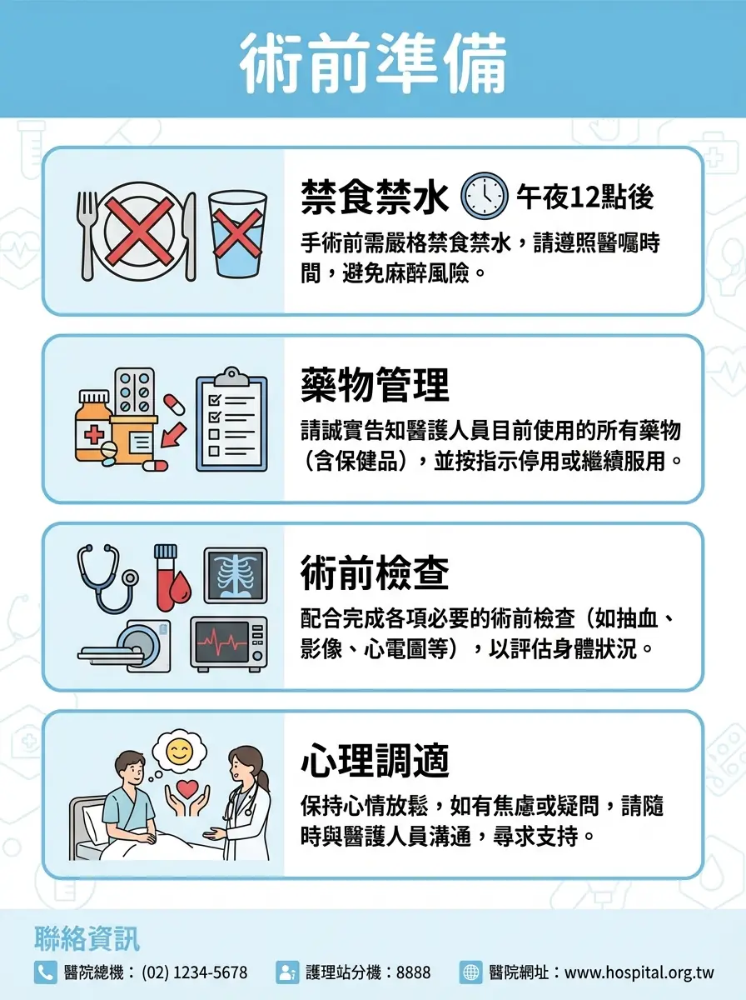
影片生成（Omni Flash / Veo 3.1）
Flow 目前提供兩系影片生成模型：Omni Flash（Gemini Omni 家族首款模型，2026 年 6 月上線，支援多模態輸入和對話式編輯）和 Veo 3.1（穩定成熟，站內分 Lite／Fast／Quality 三檔）。注意：免費帳號的選單看得到 Omni Flash，但免費 credits 只能用於 Veo 3.1 三檔 — 在 Flow 內用 Omni Flash 生成需要訂閱方案（各模型費用見上方額度表）。想免費體驗 Omni：YouTube Shorts 和 YouTube Create App 已內建 Gemini Omni 生成，所有帳號免費（單段上限 10 秒、必帶 SynthID 浮水印）。兩者都支援以下輸入方式：
直接描述你想要的影片內容，AI 生成 4-8 秒的影片片段（Omni Flash 最長 10 秒）。
上傳一張靜態圖作為首幀，AI 讓它「動起來」。最適合衛教插圖動態化。
上傳現有影片，用文字描述修改（風格轉換、元素替換）。
給定起始和結束兩張影格，AI 生成中間的動畫過程。最適合「狀態 A 變成狀態 B」的衛教演示。
選多個素材（人物、物件、場景）組進同一個畫面，再用 Prompt 指定它們怎麼互動。
模型選單裡的 Veo 3.1 - Lite，每段只要 10 credits 的最省檔，品質較低但最適合快速測試想法 — 免費日額度可以生 5 段。
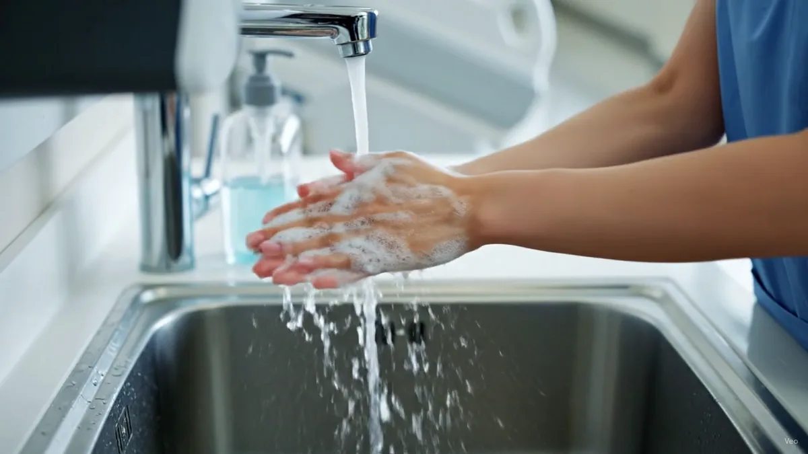
場景控制與素材管理
生出單段影片只是第一步。Flow 真正的價值在於「把多段片段變成一支連貫影片」的場景控制，以及把生成過的素材管理起來重複使用。
場景與運鏡控制
把多個生成片段組成連貫的場景序列，在同一個介面裡編排前後順序。
AI 理解前一鏡結尾的畫面，讓角色「跳」到新場景仍保持外觀一致——解決 AI 影片最常見的「換鏡頭就變臉」問題。
直接控制鏡頭平移、縮放、角度，生成前可以先預覽運鏡效果。
延長既有片段（最長可再延伸約 1 分鐘），畫面與音訊保持連續。
調整色調、亮度、陰影氛圍，不用重新生成整段影片。
影像和聲音一起生成、彼此對齊，不是事後配音。
素材與 AI 助手
建立角色檔案，讓同一個角色能延續出現在不同影片和場景中。避坑：建檔時把服裝細節寫死（「白袍＋深藍寬鬆長褲」而非「便服」），跨分鏡或用 Jump To 轉場時才不會突然換裝穿幫。
生成個人化虛擬人物，用於解說類內容。
生成過的圖片和影片可以搜尋、篩選、分類——素材愈積愈多時特別重要。
以 Gemini 為基礎的創意夥伴：腦力激盪、批次修改、幫你組織專案。搭配 Agent Instructions 設定專案級規則（見下方）效果最好。
瀏覽依主題分類的社群生成內容——找靈感、看別人的 Prompt 怎麼寫。
Flow Android 版已推出 beta（iOS 待推出）；另有 Flow Music（iOS 先行）。
Agent Instructions — 給 Flow Agent 的專案常規
在專案 prompt box 底部點 Agent Instructions → Add instruction，寫下的準則（也可附參考圖）會成為這個專案的「常駐指示」— Flow Agent 之後每次對話都自動遵守，不用每次重講風格、角色和禁忌。像是給代班同事的交班單：寫一次，之後每一班都照做。
最直觀的用法：把它當成餵給 Agent 的「風格指南」— 標準色、畫面調性、角色細節寫一次，整個專案的產出就會照著走，大幅減少影片前後不一致（AI 仍可能偶爾出格，遇到就把那條規則寫得更具體）。行為規則的部分，建議用「一律遵守／先問我／絕對不做」三層結構來寫。下面是衛教專案的通用模板，＿＿＿處換成你的專案內容：
分鏡工具
Flow 工具庫（Flow Tools）中的官方精選工具 Storyboard Studio，用三個頁籤把「一個故事想法」一路帶到完整分鏡（實測 2026-07）：
- 1. Script 劇本 — 專業劇本編輯器，格式列有 Title／Scene／Dialog／Transition 四種段落型別可切換；不想手寫就用底部對話框叫 AI 代勞（「Describe the story, edit scenes, update dialog...」）— 描述故事、改場景、改對白都是一句話的事。右上角先選好整體視覺 Style（如 Realistic）
- 2. Assets 素材 — 建立故事會用到的角色與場景資產
- 3. Storyboard 分鏡 — 把劇本視覺化成完整分鏡
這個工具特別適合製作 30-60 秒的衛教影片 — 把每個分鏡拆開處理，最後組合。
Flow Tools 創意工具庫（34 款）
Flow 在 2026 年 5 月推出 Flow Tools：一個內建的創意工具庫，登入後在 Tools 頁籤就能看到，分成 Image、Video、Prompting、Experimental 四類共 34 款。每款都是「單一用途的小工具」——不用學完整套 Flow，挑一款點開就能用。你甚至可以用自然語言自建工具、分享給別人、或 remix 別人做好的工具（點一下把它複製成自己的版本來改），完全不用寫程式。注意：remix 需要訂閱方案 — 免費帳號按下去會顯示「Upgrade to remix」；直接使用這 34 款現成工具則免費帳號全部不受限（實測 2026-07）。
⭐ 34 款太多？醫療人員先試這 5 款就好
- Image Editor — 修圖萬用刀：去背、局部重繪、擴圖、裁切一個工具搞定
- Mockup — 把衛教海報「放上」候診區牆面、T 恤、看板預覽效果
- Storyboard Studio — 衛教影片分鏡一次生成，接 Part 5 的腳本直接用
- Video Resizer — 同一支影片一鍵轉直式/橫式/方形，發不同平台不用重剪
- Type Overlays — 影片上加標題文字，衛教短片的字卡就靠它
下面的完整清單當查閱用目錄就好 — 不用現在讀完，之後想到「有沒有工具能做 X」再回來翻。
📅 資訊更新於 2026 年 7 月 — 工具庫會持續增減，以站內實際顯示為準。介紹整理自官方文案與站內工具說明卡。
🖼️ Image 圖像類（8 款）
| 工具 | 做什麼 |
|---|---|
| Simple Sketch | 塗鴉＋文字雙軌出圖：畫布有畫筆/方形/圓形/文字工具和調色盤，隨手畫個大概，下方再用一句話描述想要的圖，AI 結合兩者完稿；可匯入圖片接著畫，有 Fast/Pro 兩檔（實測補正 2026-07） |
| Scene Explorer | 輸入一個地點（如 taipei）一次生成 4 張該地場景照；側欄提供基本鏡位標籤（廣角/特寫/俯仰角/日夜）和 AI 推薦的「當地會看到的事物」（地標、小吃、街景，如 Taipei 101、珍奶、夜市），點標籤就往該主題探索，每張可單獨重生或下載（實測補正 2026-07） |
| Mockup | 上傳一張圖，一鍵合成到 12 種預設載體：筆電/手機/電視螢幕、T 恤/帽子/包包、別針/書封/海報/櫥窗/看板/壁畫，也能自訂情境（custom mockup）— 例如把衛教海報「放上」候診區牆面看效果；有 Fast/Pro 兩檔品質（實測補正 2026-07） |
| Image Editor | 圖層式圖片編輯器：可疊加圖片與文字圖層，內建五種編輯 — Refine（整體精修）、Inpaint（圈選局部重繪）、Outpaint（向外擴圖補景）、Cutout（一鍵去背）、Crop（裁切）（實測補正 2026-07） |
| Shot Explorer | 換個鏡頭重看同一場景：從選單挑一種運鏡（單選、一次一種）— 視角（俯瞰/側面/背面）、平移（左/右/上/下）、變焦（拉近/拉遠/極致細節特寫/surprise me 隨機驚喜）（實測補正 2026-07） |
| Mask Magic | 點一下就改圖中單一物件：SMART 模式點選物件自動描邊選取（也可切 BRUSH 手動刷遮罩），選取框上直接輸入指令（例：點珍奶輸入「草莓奶昔」）就地替換該物件，其餘畫面不動；中文指令可通，支援 Undo/Redo（實測補正 2026-07） |
| Converge | 解決「草圖直接餵 AI 常被誤讀成雜訊」的問題：先把隨手草圖轉成乾淨、AI 讀得懂的向量線稿（保留原始設計意圖），再反覆挑變體、圈註記精修，收斂到滿意後才套風格渲染完稿 — 比拿草圖直接出圖更可控、更一致（作者說明補正 2026-07） |
| Grid Architect | 網格素材工作台：一段 prompt 生成整面網格並自動拆成單張下載（可一鍵升到 1K），也能逐格下 prompt、或用精靈把一個想法自動拆成各格提示詞；支援風格預設與參考圖，哪一格不滿意就單獨重改那格，不用整面重來 — 適合多格衛教卡、對比圖（作者說明補正 2026-07） |
📸 Image 類實測成果（2026 年 7 月，點圖可放大）
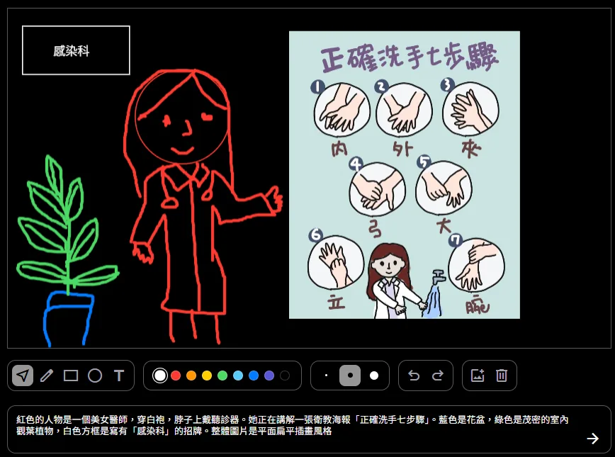
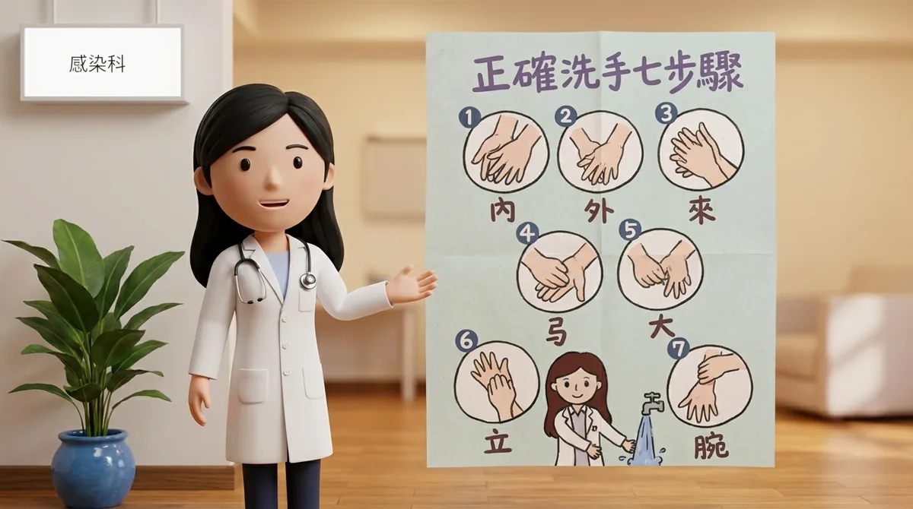
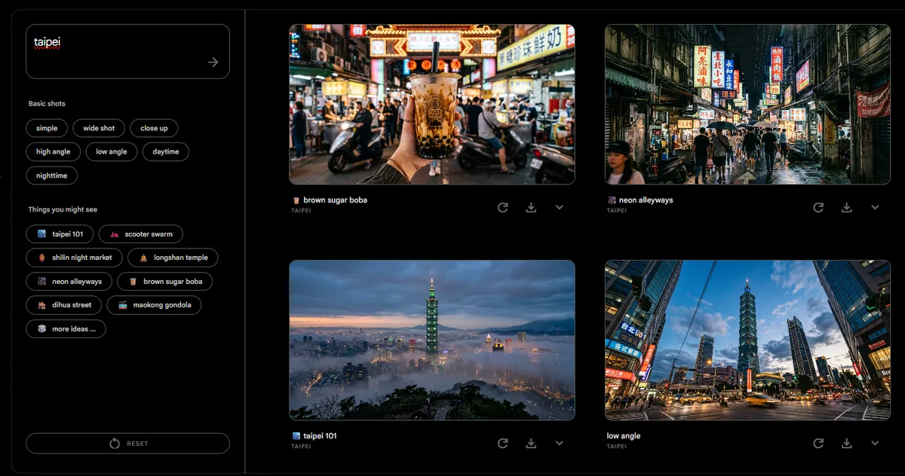
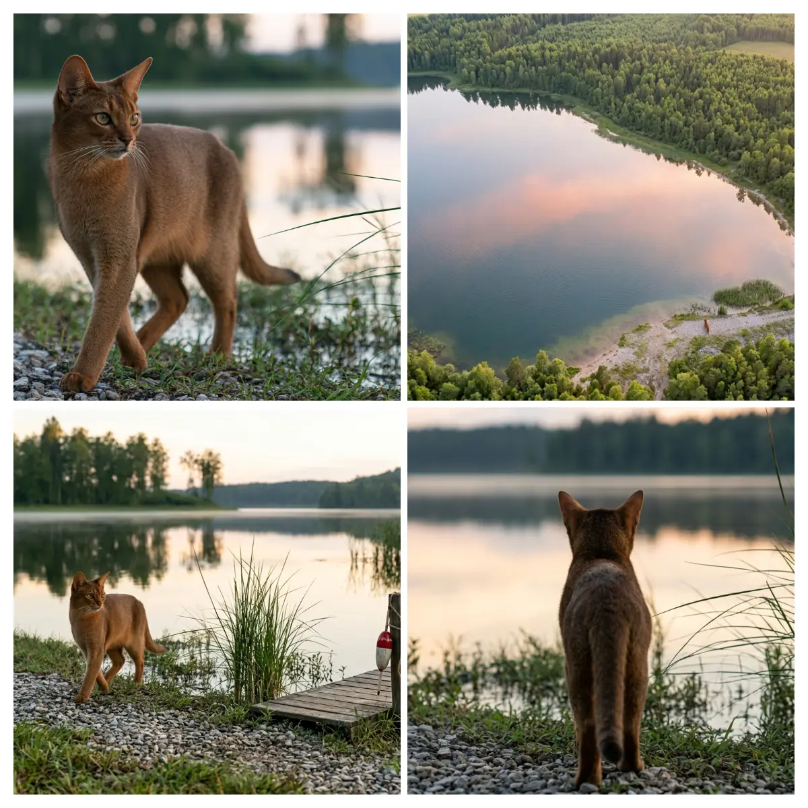
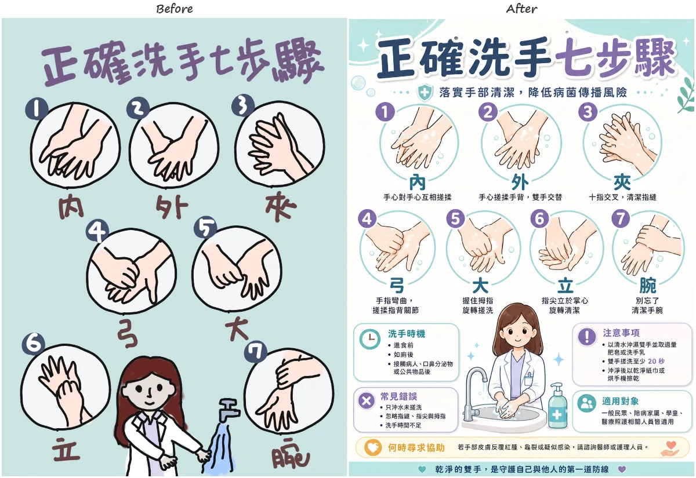
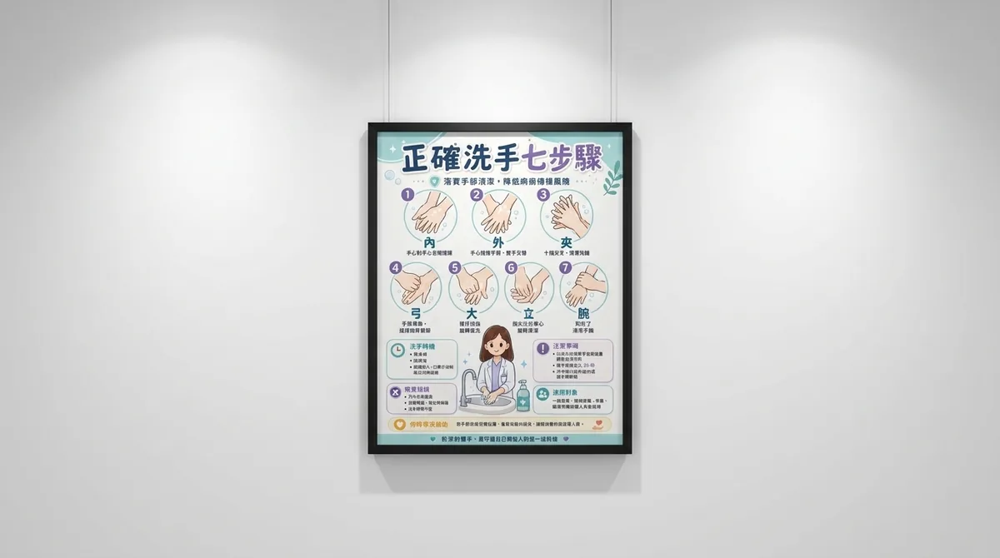
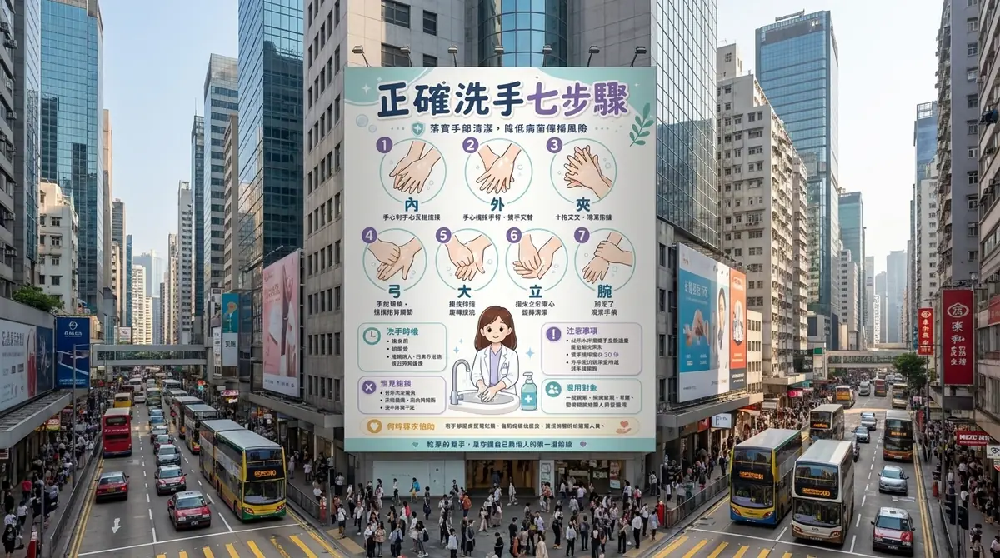
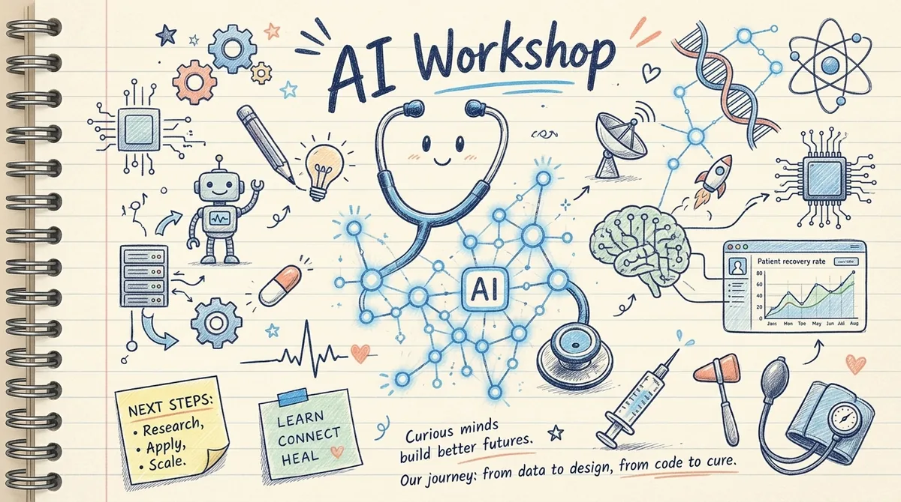
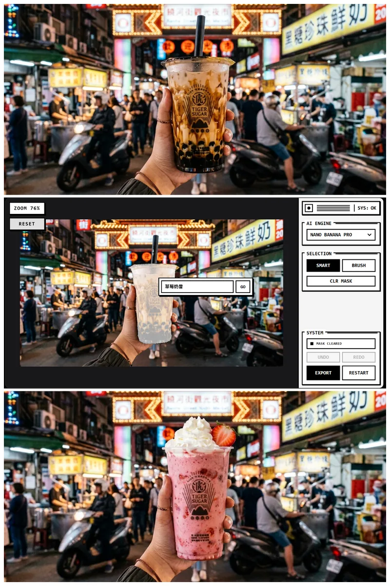
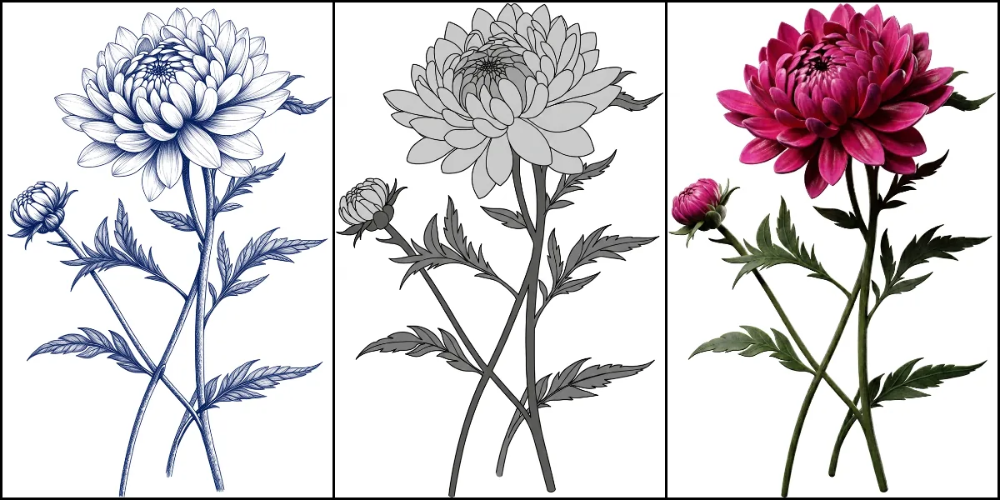
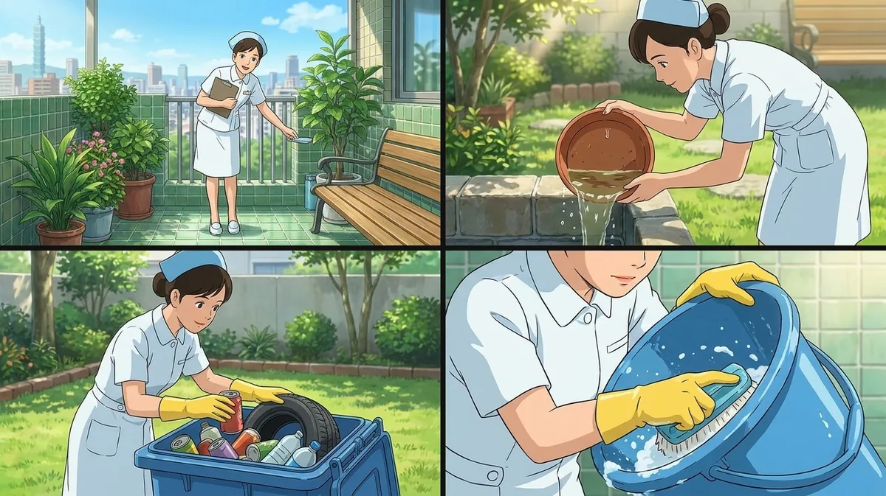
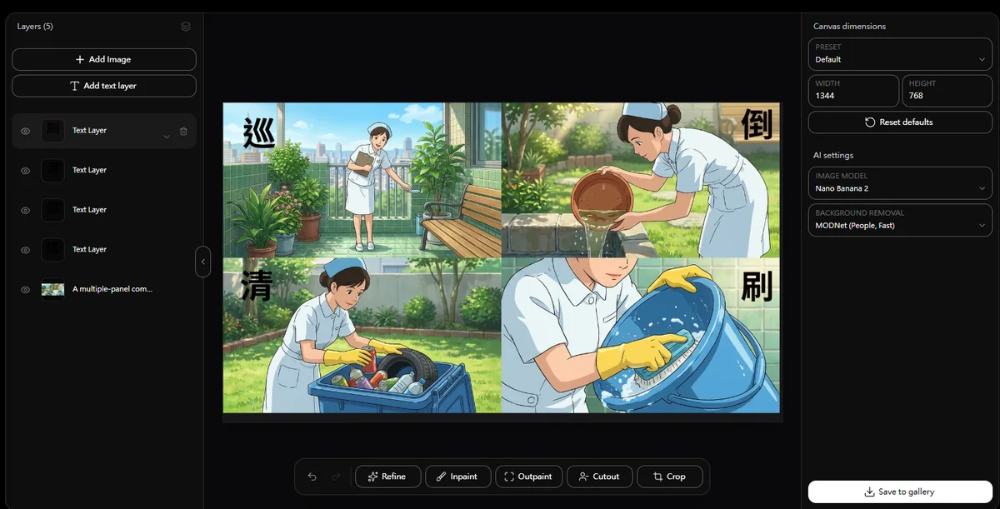
📑 觀念充電：圖層是什麼
上面 Image Editor 的例子已經用到「圖層」，而接下來 Video 類的 Type Overlays、Poster Designer、Video Sketch 更是整套建立在「圖層＋時間軸」上 — 先花一分鐘搞懂圖層，後面每一款工具的操作都會變直覺。
圖層就是把畫面拆成多個獨立元素，再依上下順序疊合成完整作品：背景一層、主體一層、裝飾一層、文字一層，像一張張透明片疊在一起。三個核心規則：
- 上下順序 — 上層會蓋住下層，越上面的圖層越容易被看見
- 獨立編輯 — 每一層都能單獨修改、移動、縮放、隱藏；想改標題，只要改文字層，底圖不用重生
- 非破壞性修改 — 用調整層與遮罩改效果，原始內容都還在，隨時可以反悔
這個觀念在製圖與剪輯是共通的：剪輯軟體（CapCut、Video Sketch）裡的背景影片、字幕、Logo、音樂，本質上也是一層層疊起來的圖層 — 換字幕或音樂，不會影響其他內容。
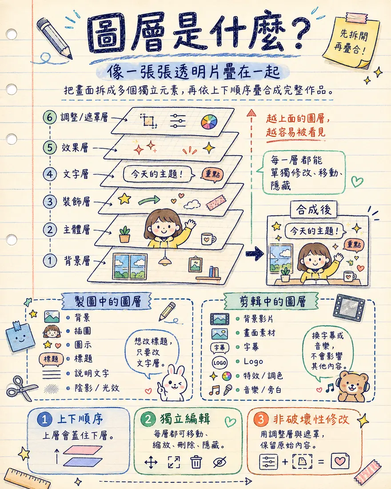
🎬 Video 影片類（10 款）
| 工具 | 做什麼 |
|---|---|
| Shader Effects | 幫影片套濾鏡特效：10 種預設濾鏡（LUT、Ghost、Split、Zoom、Mosaic 馬賽克、Oil 油畫、Halftone 網點、ASCII 字元畫、Dither 抖色、VHS 錄影帶），每款有專屬 Shader Tuning 參數可微調（如 VHS 的 Jitter 抖動/Color Smear 色彩拖影/Static Noise 雜訊/Damage Blend 損傷/Tracking Crease 跳格摺痕）；另有共通 Finishing 調色面板（Bloom/曝光/對比/飽和/陰影/亮部/色溫/色調/暈影）與 Colorize 開關。成品可 Export mp4（實測輸出 1280×720、H.264、30fps）或 Capture Frame 擷取單張停格（實測 2026-07） |
| Type Overlays | 幫影片加動態文字疊層，右側面板分 Design／Animate 兩頁籤：Design 管字體排印（字型、字重、字級、行高、字距、對齊、顏色、Media Opacity、九宮格定位）；Animate 管動畫 — 5 種進出場轉場（None/Blur/Slide Up/Fade/Appear）＋ 4 種 Kinetic 動態（Stack/Wave/Wiggle/Shuffle），可選按字元/單字/整行套用、Linear/Smooth 平滑度與速度；底部時間軸可拖拉文字出現的時間區段，完成後 Render Video 輸出（實測 2026-07） |
| PixelBento | lo-fi／glitch 復古畫質特效台（數位藝術家 László Gaal 開發）：載入圖片或影片後，右側一排日式羅馬拼音命名的效果模組（DYUTON 雙色調、BLUMI 光暈、GURICHU 故障、RETORO 復古、ANAROGU 類比…共 13 款）可個別開關、轉四角旋鈕微調、自由疊加，頂部 MIX 滑桿控整體混合強度；進階玩法是 RECORD AUTOMATION — 邊播邊錄下你轉旋鈕的動作，變成隨時間變化的效果自動化；輸出可 Export 影片或 Capture Frame 擷取停格（實測 2026-07） |
| Poster Designer | 圖層式動態海報編輯器：直式畫布上疊文字/圖片圖層（左下 LAYERS 面板管理，Canvas 為底層），每個圖層在底部 8 秒時間軸上是一條可拖拉的 clip，控制何時出現；選取圖層後右側 Design 頁籤調字型/字級/字距/行高/旋轉/對齊/顏色/不透明度/混合模式，Animate 頁籤給每層加效果 — 跟 Type Overlays 幾乎同一套文字動畫（None/Blur/Explode/Fade/Appear/Stack/Wave/Wiggle/Shuffle 九宮格，按字元/字/行套用），但多了起始時間/持續長度/速度/強度四支細調滑桿；CONTENT 框直接改文字。兩款的分工：Type Overlays 是在「現成影片」上疊字，這款是從零搭「多層圖文海報」再讓它動；成品輸出動態海報影片，或擷取任一格當靜態海報（實測 2026-07） |
| Video Sketch | 在影片上疊手繪塗鴉與文字：Import Media 載入影片後，Sketch 塗鴉層和 Text 文字層各自在底部時間軸是一條可拖拉的 clip，控制何時出現；筆刷有 14 色調色盤（可自訂色）、粗細、透明度與橡皮擦，畫好還能套手繪線條的動態效果，Render Video 輸出 — 衛教影片上手繪箭頭、圈重點的首選（實測 2026-07） |
| Transition Machine | 給兩段影片生成無縫轉場：介面並排 Clip One／Clip Two（各顯示首尾幀），中間 Transition Description 文字框描述鏡頭如何從 A 銜接到 B（例如「dolly-in 推進穿過人物頭髮的暗部、再高速拉出到下一景」），轉場長度可選 4／6／8 秒、另有省額度的 LITE 模式，按 Generate Transitions 生成（實測 2026-07） |
| Weirdcore | 故障美學特效台（Google Creative Lab 出品）：10 種效果各附一句定位 — Fry（contrast crunch 對比爆裂）、Cutter（time travel）、Smooth（dreamy blur）、Tape（lost memory）、Emboss（ultratextured）、Shake（motion roll）、Blocks（grid scatter 網格散射）、Drift（color waves）、Melt（pixel sort 像素排序）、Echo（temporal ghosting 殘影），用 Effect Stack 疊加多款或 Random 抽隨機配方，每款有專屬參數滑桿（如 Blocks 的 Intensity/Grid Size/Scale Chaos/Offset/Rotation），Render 輸出（實測 2026-07） |
| Video Resizer | 把影片轉成任意長寬比，全程三步：載入影片（Active Media 顯示解析度與秒數，可 Replace Source 換片）→ 選 Output Ratio（如 9:16）→ Alignment 選 FILL（裁滿畫面）或 FIT（完整保留、上下留黑邊），Export Video 輸出 — 橫式衛教影片轉直式短影音就靠這款（實測 2026-07） |
| Stringout Creator | 多段片段串接粗剪：Import（挑 Flow 素材庫）或 Upload（上傳檔案）進底部時間軸排序，全域設定統一長寬比與 Fill/Fit 縮放；每段時長選 Full（完整播畢）或 Custom（統一秒數，拉到 0.4 秒就是快閃剪輯），可 Add Text 插字卡、Shuffle 一鍵隨機重排，Save Stringout 輸出（實測 2026-07） |
| Video Granulator | 把影片當「樂器」演奏的顆粒合成器，介面做成復古硬體取樣機（Video Granular Synthesizer）：把影片切成毫秒級顆粒重組播放，旋鈕控 Play Speed/Grain Speed/Size（如 230ms）/Jitter 抖動與 Reverse 倒放；附 AUDIO FX（Reverb/Room/Delay/Feedback）與 VISUAL FX（Echo/Smear＋CRT/Glitch 開關）；底部音訊波形條拖 IN/OUT 設循環區間，按 REC 錄下你的即興操作成輸出成品（實測 2026-07） |
✍️ Prompting 提示詞類（5 款）
| 工具 | 做什麼 |
|---|---|
| Character X-Ray | 用「AI 藝術指導」把公式化角色磨立體：左欄輸入一句 Brief（實測中文「可愛的小女孩」也通）生成角色圖＋Wardrobe 穿搭與 Psychology 性格設定文字；按 Get feedback 後右欄從 Wardrobe／Style／Color／Lore 四面向點出角色太「樣板」的地方（如「原色配色像量販目錄，缺乏個性」「皮膚渲染太無菌，像收藏公仔」），每面向給 2 個具體修改建議可點選（也能自填、刷新重抽），挑滿 2 項後按 Write prompt 產出強化版角色 prompt（實測 2026-07） |
| Style Writer | 把參考圖（情緒板）轉成可重複使用的風格描述：Upload images 或 Media Grid 選入圖片、勾選後按 Update style summary，AI 產出分段風格摘要 — Visual Style／Composition／Attitude／Colors／Lighting 各一段，關鍵詞粗體標示；摘要可直接編輯，最後 Copy text 或 Export as markdown 帶去別的工具當風格 prompt（實測 2026-07） |
| Storyboard Studio | 三步驟頁籤 Script → Assets → Storyboard：先寫劇本、再建素材、最後視覺化成分鏡 — 用法見上方分鏡工具一節（實測 2026-07） |
| Prompt Tree | 把 Prompt 整理成一棵「細節樹」：先輸入主體，再往下掛細節、細節下再掛子細節，AI 把整棵樹翻譯成最佳化 prompt 出圖；生成後直接改樹上的節點，AI 會解讀你的改動、產生針對性的修改 prompt 去調整圖片 — 比整段重寫更精準的逐步編輯（官方入口說明補正 2026-07） |
| Story Sketch | 極簡分鏡板：頂部 Instructions 欄輸入一次全片視覺風格（如 cinematic、warm lighting），下方 Add shot 逐格新增分鏡，整批分鏡共用同一套風格設定（實測 2026-07） |
🧪 Experimental 實驗類（11 款）
| 工具 | 做什麼 |
|---|---|
| Frame Deconstructor | 把影片和 GIF 逐格拆解，重組成 3D 雕塑般的視覺 |
| Blob Tracking | 在影片上疊加科幻風追蹤特效：節點、外框方塊、隨機 ID 編號（社群創作者 Arden Schager 開發） |
| DepthWarp 4D | 用深度資訊把影片扭轉出新維度的視角效果 |
| Webcam Set | 用網路攝影機把自己「置入」影片場景中 |
| Datamosh | 為影片加上 datamosh 故障特效 — 色彩融化、殘影拖曳（Google Creative Lab 出品） |
| 3D Model Visualizer | 用 3D 模型引導圖像生成 — 先擺好角度和構圖，再讓 AI 上色成圖 |
| Scout360 | 從一張圖片生成 360 度環景空間 — 一張診間照片變成可環顧的場景 |
| Ribbit | 讓影片跟著音樂節拍即時「演奏」播放，像 VJ 表演一樣 |
| Whisk | 用三張圖片當 Prompt：主體＋場景＋風格，合成一張全新圖像。原是 Google Labs 獨立產品，2026 年 2 月併入 Flow |
| Pose Text | 加上會自動跟著影片中角色移動的文字標籤 |
| 3D Face Swap | 把你的臉換到虛擬角色上。⚠ 只能換自己的臉 — 不可替換真實病人、同事或名人臉部，不建議用於醫療、教學或公開內容 |
衛教影片完整工作流
用 Google Flow 從零做出一支 30 秒衛教影片：
用 ChatGPT 生成 5-6 個分鏡的腳本，每個分鏡包含旁白文字和畫面描述。
在 Flow 中逐一生成每個分鏡的靜態插圖。先生第一張，確認風格後，後續圖會自動維持一致。
把每張靜態圖設為首幀，用影片模型讓它們動起來。每段 3-5 秒。
把旁白文字貼到 Google AI Studio，選語音角色，匯出 MP3。水流聲、心跳聲這類簡單環境音不用外接 — Step 3 生成影片時的音訊同步功能會直接帶出來，需要精準的人聲旁白才走這一步。
匯入影片片段 + 語音 → 對齊時間軸 → 加字幕 → 加背景音樂 → 匯出。詳見 番外 — CapCut 剪輯實戰。